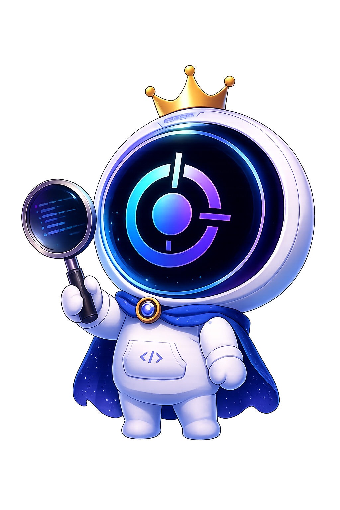

CodeLens AI はコードをレビューするだけで終わりません。リポジトリを理解し・記録し・成長を追跡する——すべてのレビューが、リポジトリの知識になる。

これはデモではなく、実在するリポジトリの本物のレビュー結果です。あなたのリポジトリでも同じように解析できます。
params[:debug_log] 直参照レビューは指摘して終わりではありません。RewardMe は CodeLens のレビューを受けて、実際にスコアを伸ばしました。これが Repository Intelligence の証拠です。
すべてのレビューが本になる。Repository DNA・設計思想・成長日記・抽出された知識——リポジトリの「第二の脳」。
GitHub の URL を貼るだけ。レビューが、リポジトリの知識になる。
▶ Review Your Repository